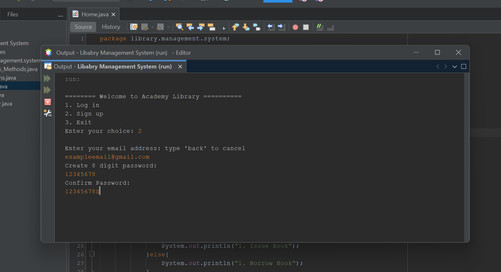
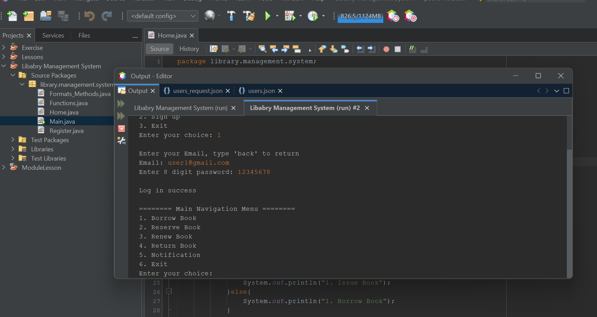

Software Development
Library Management System


OVERVIEW
The Library Management System is a Java-based console application designed to streamline the operations of a university library. It features a robust back-end capable of managing user authentication, book inventory, and borrowing transactions. The system is built with a clear distinction between Admin and User roles, ensuring that sensitive tasks like "Issuing Books" are restricted to authorized personnel while students can easily browse and request resources.
KEY FEATURES
- Role-Based Access Control (RBAC): Implemented a dual-interface system where Admins can issue books and manage inventory, while regular users have access to borrowing, reserving, and renewing functionalities.
Persistent Data Storage: Integrated JSON-based storage for both user accounts and book catalogs, ensuring that all data is saved and retrieved accurately across different sessions.
Secure Authentication: Built a login and registration that validates email formats and requires password verification, including a "three-try" limit for security during sensitive actions.
WHAT I LEARNED
- Data Persistence & JSON Manipulation: This project was my first major dive into external data storage. I learned how to map Java objects to JSON structures and how to handle file writing exceptions to prevent data loss.
Logic Flow & Input Validation: I sharpened my skills in "defensive programming." I learned how to sanitize user inputs (like email trimming and integer validation) to prevent the program from crashing when a user enters unexpected data.
State Management: Managing the currentUser state across different menus taught me how to keep track of who is logged in and what permissions they should have at any given time.
Static Methods & Package Organization: By utilizing static imports and organizing the project into a cohesive package (library.management.system), I learned how to build a scalable project structure that is easy to navigate.
TOOLS USED
Java
JSON